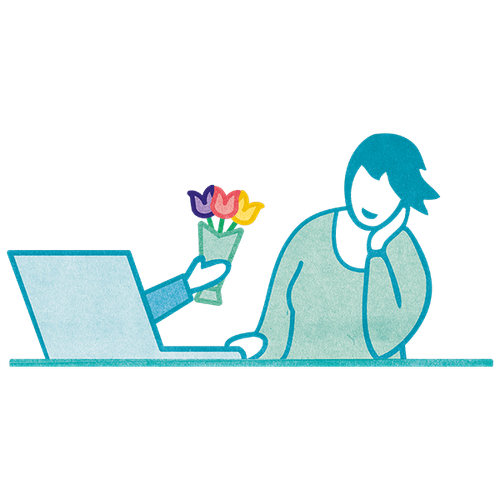

Business
5+ seats
Access for multiple team members within a tailored plan
Truly great teams are more than the sum of their individual members. They actively strengthen how they work together and care about relationships.
On this page, you’ll learn how 9 Spaces can help you strengthen team dynamics.

The internet is full of shallow team-building activities. Our experience: you don’t strengthen team cohesion by closing your eyes and falling backwards into your colleagues’ arms. Relationship work is real work.
Looking for ways to sustainably improve team cohesion? On 9 Spaces, you’ll find a wide range of small and larger tools you can bring into your team or organisation.

On 9 Spaces you'll find interactive whiteboards, proven methods, facilitator guides and tutorials for smart processes, agile teams and successful transformation.
Need more reasons why investing in team cohesion is worth it? We hope not. But if you do, you’ll find three below:
Strong team performance emerges when as many people as possible can contribute their strengths. For that, people need to know both their own strengths and those of their teammates.
The still widespread culture of fear is a relic of the past. Teams need a culture of open exchange where people dare to take risks and speak up about uncomfortable things. Especially in high-innovation environments, teams need.
Work is a social space where people come together. People don’t leave their need for connection and belonging at the door. Relationships form anyway. Create an environment that fosters strong relationships instead of preventing them.
Access for multiple team members within a tailored plan
All features and benefits at a glance?